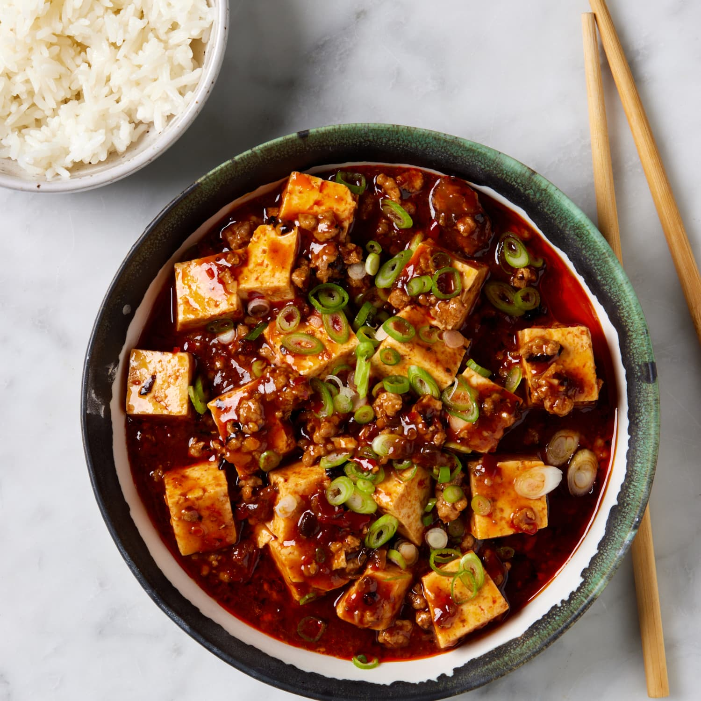

mapo toufu

Description
Mapo Tofu is a classic Sichuan dish featuring soft tofu cooked in a spicy, numbing sauce made with minced pork or beef, fermented black beans, doubanjiang (spicy bean paste), and Sichuan peppercorns. It has a rich, savoury, and fiery flavour with a signature tingling sensation from the peppercorns. Traditionally served over steamed rice, it’s a staple of Sichuan cuisine.
Ingredients
- 300g soft or silken tofu, cut into cubes
- 150g minced pork (or beef)
- 2 tbsp vegetable oil
- 2 cloves garlic, minced
- 1 tsp ginger, minced
- 2 spring onions, chopped(for garnish)
Steps
- Prepare ingredients – Cut tofu into cubes and mix cornstarch with water.
- Blanch tofu (optional but helps texture) – Gently simmer tofu in hot salted water for 2 minutes, then drain.
- Sauté aromatics – Heat oil in a pan, fry garlic, ginger, and fermented black beans.
- Cook the meat – Add minced pork/beef and stir-fry until browned.
- Add seasonings – Stir in doubanjiang, soy sauce, sugar, and Sichuan peppercorns.
- Simmer – Pour in stock, then add tofu and gently stir. Let it simmer for 5 minutes.
- Thicken the sauce – Add cornstarch slurry and mix until slightly thickened.
- Garnish & serve – Sprinkle with chopped spring onions and extra Sichuan pepper. Serve hot with rice!
Home page